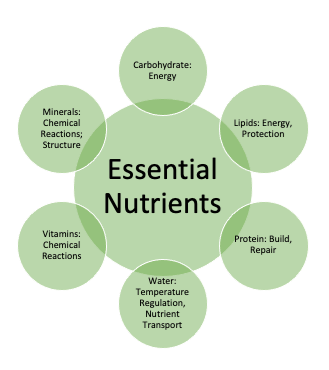
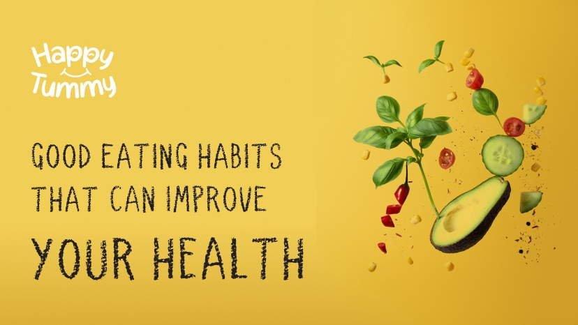

Nutrition
Good nutrition is essential for overall health and well-being. It involves consuming a balanced diet that provides the nutrients your body needs to function effectively.
Key Nutrients
- Carbohydrates: The body’s main source of energy. Found in foods like bread, rice, and fruits.
- Proteins: Essential for building and repairing tissues. Found in meat, beans, and dairy products.
- Fats: Necessary for energy and supporting cell growth. Healthy fats are found in nuts, avocados, and olive oil.
- Vitamins and Minerals: Vital for immune function, energy production, and bone health. Found in various fruits, vegetables, and whole grains.
Healthy Eating Tips
To maintain a balanced diet, consider the following tips:
- Include a variety of foods in your diet.
- Focus on whole grains, lean proteins, and plenty of fruits and vegetables.
- Stay hydrated by drinking plenty of water.
- Limit processed foods, added sugars, and saturated fats.
Meal Planning
Planning your meals can help you maintain a healthy diet:
- Prepare a weekly menu with balanced meals.
- Include snacks that are healthy and satisfying.
- Consider portion sizes to avoid overeating.
Common Nutrition Myths
It's important to distinguish between fact and fiction when it comes to nutrition:
- Myth: Carbs are bad for you. Fact: Carbohydrates are essential for energy; choose whole grains for better health.
- Myth: All fats are unhealthy. Fact: Healthy fats are crucial for your body; focus on unsaturated fats.
- Myth: You need to detox to be healthy. Fact: Your body naturally detoxifies; focus on a balanced diet instead.